コーディング
では、実際にコーディングしていきます。
from keras.utils import np_utils
from keras.models import Sequential
from keras.layers.convolutional import MaxPooling2D
from keras.layers import Activation, Conv2D, Flatten, Dense,Dropout
from sklearn.model_selection import train_test_split
from keras.optimizers import SGD, Adadelta, Adagrad, Adam, Adamax, RMSprop, Nadam
from PIL import Image
import numpy as np
import glob
import matplotlib.pyplot as plt
import time
import os
まず最初に収集してきた画像データを数値データに変換し学習データを作成します。
ディレクトリ構造は以下のようになっており、上位画像とその他画像が別ディレクトリに保存されています。各ディレクトリから画像を読み込む際に、上位画像には1、その他には0というカテゴリ変数を与えます。
馬体写真
#フォルダを指定
folders = os.listdir(r"C:\Users\aashi\umanalytics\photo\image")
#画総数を指定(今回は50×50×3)。
image_size = 300
dense_size = len(folders)
X = []
Y = []
#それぞれのフォルダから画像を読み込み、Image関数を使用してRGB値ベクトル(numpy array)へ変換
for i, folder in enumerate(folders):
files = glob.glob("C:/Users/aashi/umanalytics/photo/image/" + folder + "/*.jpg")
index = i
for k, file in enumerate(files):
image = Image.open(file)
image = image.convert("L").convert("RGB")
image = image.resize((image_size, image_size)) #画素数を落としている
data = np.asarray(image)
X.append(data)
Y.append(index)
X = np.array(X)
Y = np.array(Y)
X = X.astype('float32')
X = X / 255.0 # 0~1へ変換
X.shape
Y = np_utils.to_categorical(Y, dense_size)
#訓練データとテストデータへ変換
X_train, X_test, y_train, y_test = train_test_split(X, Y, test_size=0.20)
訓練データとテストデータの分割ができました。今考えているのは「上位」と「その他」の2値分類となっていますが、「上位」を3位以内と定義したので不均衡なデータとなっています(その他データが上位データの5倍くらい)。こういった場合、そのままのデータで学習をするとサンプルサイズが多い方のラベル(この場合「その他」)を予測しやすくなり、バイアスのあるモデルとなります。よって、学習データは2クラスそれぞれが同じサンプルサイズとなるよう調整してやる必要があります。
index_zero = np.random.choice(np.array(np.where(y_train[:,1]==0))[0,],np.count_nonzero(y_train[:,1]==1),replace=False)
index_one = np.array(np.where(y_train[:,1]==1))[0]
y_resampled = y_train[np.hstack((index_one,index_zero))]
X_resampled = X_train[np.hstack((index_one,index_zero))]
学習データにはこのy_resampledとX_resampledを使用します。次に、CNNを構築していきます。Kerasでは、sequential modelを指定し、addメソッドで層を追加して行くことでモデルを定義します。
model = Sequential()
model.add(Conv2D(32, (3, 3), padding='same',input_shape=X_train.shape[1:]))
model.add(Activation('relu'))
model.add(Conv2D(32, (3, 3)))
model.add(Activation('relu'))
model.add(MaxPooling2D(pool_size=(2, 2)))
model.add(Dropout(0.25))
model.add(Conv2D(64, (3, 3), padding='same'))
model.add(Activation('relu'))
model.add(Conv2D(64, (3, 3)))
model.add(Activation('relu'))
model.add(MaxPooling2D(pool_size=(2, 2)))
model.add(Dropout(0.25))
model.add(Flatten())
model.add(Dense(512))
model.add(Activation('relu'))
model.add(Dropout(0.5))
model.add(Dense(dense_size))
model.add(Activation('softmax'))
model.summary()
## Model: "sequential"
## _________________________________________________________________
## Layer (type) Output Shape Param #
## =================================================================
## conv2d (Conv2D) (None, 300, 300, 32) 896
## _________________________________________________________________
## activation (Activation) (None, 300, 300, 32) 0
## _________________________________________________________________
## conv2d_1 (Conv2D) (None, 298, 298, 32) 9248
## _________________________________________________________________
## activation_1 (Activation) (None, 298, 298, 32) 0
## _________________________________________________________________
## max_pooling2d (MaxPooling2D) (None, 149, 149, 32) 0
## _________________________________________________________________
## dropout (Dropout) (None, 149, 149, 32) 0
## _________________________________________________________________
## conv2d_2 (Conv2D) (None, 149, 149, 64) 18496
## _________________________________________________________________
## activation_2 (Activation) (None, 149, 149, 64) 0
## _________________________________________________________________
## conv2d_3 (Conv2D) (None, 147, 147, 64) 36928
## _________________________________________________________________
## activation_3 (Activation) (None, 147, 147, 64) 0
## _________________________________________________________________
## max_pooling2d_1 (MaxPooling2 (None, 73, 73, 64) 0
## _________________________________________________________________
## dropout_1 (Dropout) (None, 73, 73, 64) 0
## _________________________________________________________________
## flatten (Flatten) (None, 341056) 0
## _________________________________________________________________
## dense (Dense) (None, 512) 174621184
## _________________________________________________________________
## activation_4 (Activation) (None, 512) 0
## _________________________________________________________________
## dropout_2 (Dropout) (None, 512) 0
## _________________________________________________________________
## dense_1 (Dense) (None, 2) 1026
## _________________________________________________________________
## activation_5 (Activation) (None, 2) 0
## =================================================================
## Total params: 174,687,778
## Trainable params: 174,687,778
## Non-trainable params: 0
## _________________________________________________________________
では、学習パートに入ります。アルゴリズムにはAdadeltaを使用します。よくわかってないんですけどね。。。
optimizers ="Adadelta"
results = {}
epochs = 50
model.compile(loss='categorical_crossentropy', optimizer=optimizers, metrics=['accuracy'])
results = model.fit(X_resampled, y_resampled, validation_split=0.2, epochs=epochs)
不均衡データ調整のためのアンダーサンプリング
ここから、Testデータで2値分類を行うのですが、学習データをアンダーサンプリングしているので、予測確率を計算する際にアンダーサンプリングを行ったサンプル選択バイアスが生じてしまいます。論文はこちら。
よって、補正が必要になるのですがこの部分の定式化をここでしておきたいと思います。現在行っている2値分類問題を説明千数\(X\)から2値を取る目的変数\(Y\)を予測する問題と表現することにします。データセット\((X,Y)\)は正例が負例よりもかなり少なく、負例のサンプルサイズを正例に合わせたデータセットを\((X_s,Y_s)\)とします。ここで、\((X,Y)\)のサンプル組が\((X_s,Y_s)\)にも含まれる場合に1を取り、含まれない場合に0をとるカテゴリ変数\(s\)を定義します。
データセット\((X,Y)\)を用いて構築したモデルに説明変数\(x\)を与えた時、正例と予測する条件付き確率は\(P(y=1|x)\)で表すことができます。一方、\((X_s,Y_s)\)を用いて構築したモデルで正例を予測する条件付き確率はベイズの定理とカテゴリ変数\(s\)を用いて、
\[
P(y=1|x,s=1) = \frac{P(s=1|y=1)P(y=1|x)}{P(s=1|y=1)P(y=1|x) + P(s=1|y=0)P(y=0|x)}
\]
と書けます。\((X_s,Y_s)\)は負例のサンプルサイズを正例に合わせているため、\(P(s=1,y=1)=1\)であるので上式は
\[
P(y=1|x,s=1) = \frac{P(y=1|x)}{P(y=1|x) + P(s=1|y=0)P(y=0|x)}
= \frac{P(y=1|x)}{P(y=1|x) + P(s=1|y=0)(1-P(y=1|x))}
\]
と書き換えることができます。\(P(s=1|y=0)\neq0\)であることは\((X_s,Y_s)\)の定義より自明です(0だと正例しかない不均衡データになる)。よって、\(P(y=0,x)\neq0\)である限り、アンダーサンプリングのモデルが正例とはじき出す確率は元のデータセットが出す確率に対して正のバイアスがあることがわかります。求めたいのはバイアスのない\(P(y=1|x)\)なので\(P=P(y=1|x),P_s=P(y|x,s=1),\beta=P(s=1,y=0)\)とすると、
\[
P = \frac{\beta P_s}{\beta P_s-P_s+1}
\]
とかけ、この関係式を用いてバイアスを補正することができます。
今確認したことを関数として定義しましょう。
def calibration(y_proba, beta):
return y_proba / (y_proba + (1 - y_proba) / beta)
sampling_rate = sum(y_train[:,1]) / sum(1-y_train[:,1])
y_proba_calib = calibration(model.predict(X_test), sampling_rate)
y_pred = np_utils.to_categorical(np.argmax(y_proba_calib,axis=1), dense_size)
from sklearn.metrics import confusion_matrix, ConfusionMatrixDisplay, accuracy_score
score = accuracy_score(y_test, y_pred)
print('Test accuracy:', score)
## Test accuracy: 0.288135593220339
まったく良くない結果です。ConfusionMatrixを出してみたところどうやらうまくいっていないことがわかりました。
ConfusionMatrixDisplay(confusion_matrix(np.argmax(y_test,axis=1), np.argmax(y_pred,axis=1))).plot()
## <sklearn.metrics._plot.confusion_matrix.ConfusionMatrixDisplay object at 0x000000004939E748>
plt.show()
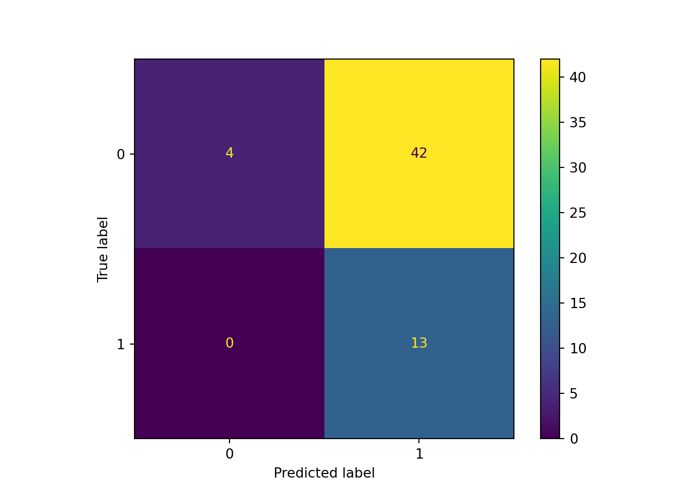
plt.close()
不均衡データのバイアス修正はしたんですが、それでもなお負値を予測しやすいモデルとなっています。これでは使えないですね。


 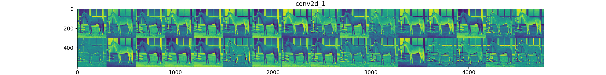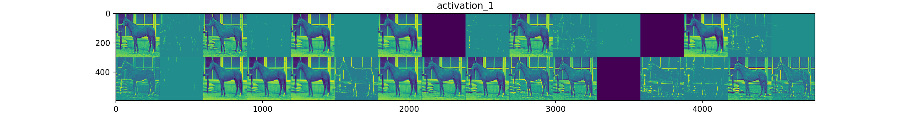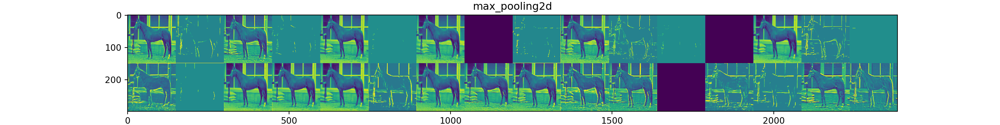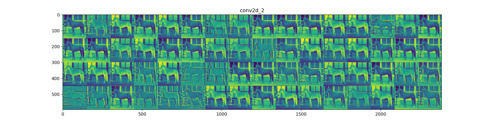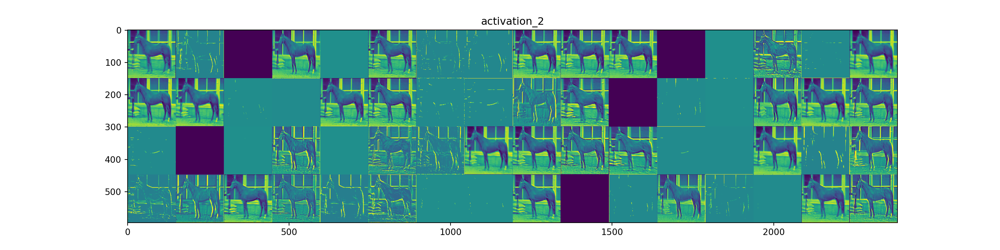
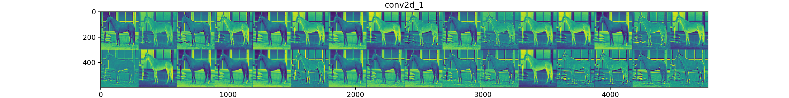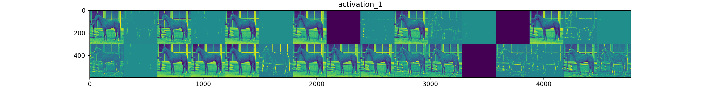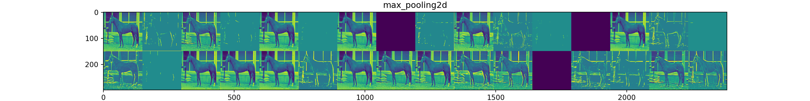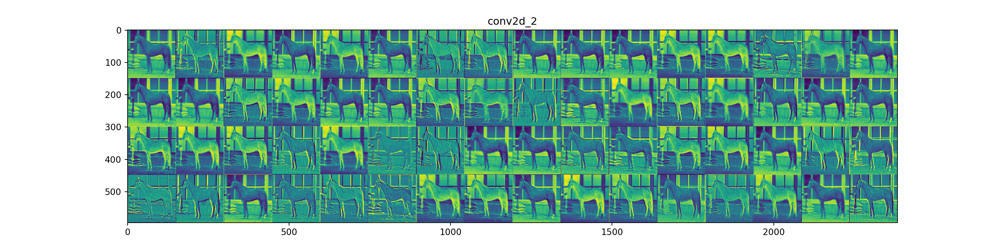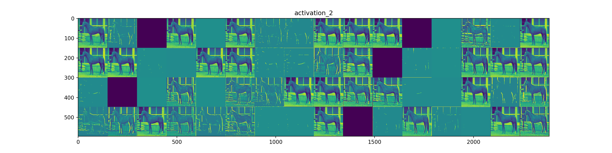